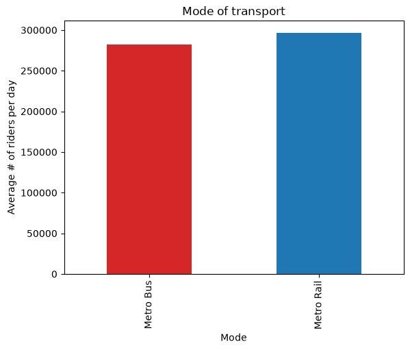
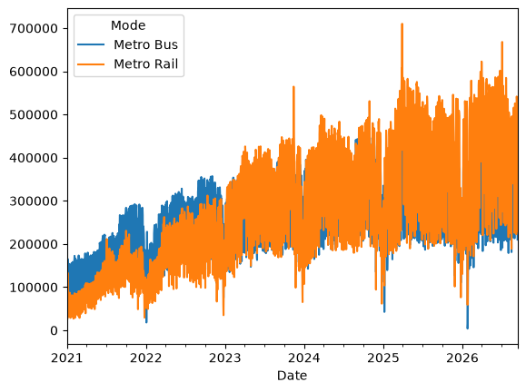
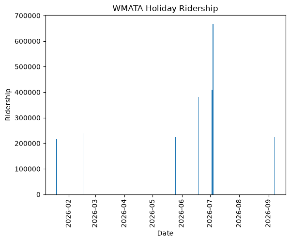
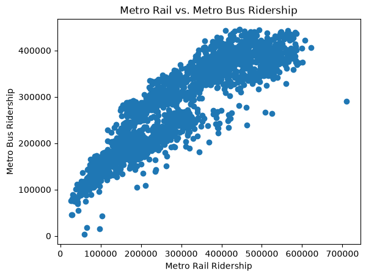
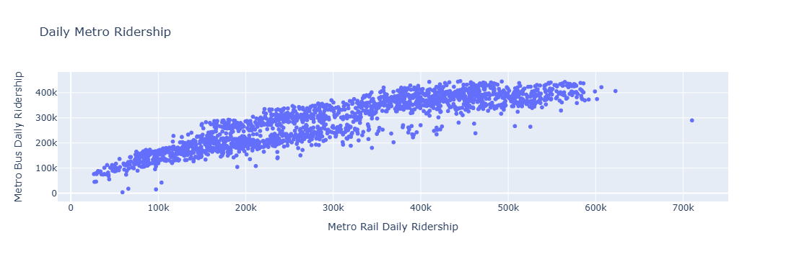

import pandas as pdWeek 4 Assignment
Week 4 Assignment
For this week’s assignment, I wanted to take a look at another local data source. I chose to use the WMATA data portal to download bus and metro ridership for the past year and past 5 years. Although this dataset only has 6 columns, I still think it can be relevant for data cleaning, as there are dates that need to be manipulated. I plan on using the 5-year dataset, as the shorter dataset only has around 1,000 records.
riders = pd.read_csv('Daily Ridership - Data View_data (1).csv')
riders.head()| Date | Day of Week | Weekday / Saturday / Sunday | Holiday | Mode | Entries Or Boardings | |
|---|---|---|---|---|---|---|
| 0 | 9/13/2026 12:00:00 AM | Sun | Sunday | No | Metro Rail | 230521 |
| 1 | 9/13/2026 12:00:00 AM | Sun | Sunday | No | Metro Bus | 210096 |
| 2 | 9/12/2026 12:00:00 AM | Sat | Saturday | No | Metro Rail | 314631 |
| 3 | 9/12/2026 12:00:00 AM | Sat | Saturday | No | Metro Bus | 249025 |
| 4 | 9/11/2026 12:00:00 AM | Fri | Weekday | No | Metro Rail | 470178 |
Data Wrangling
So, we have a few columns relating to date we can alter. I’m going to take the date column, remove the time as it will be 12:00am for every row, and then make sure it’s in pandas date format.
# First lets check the type to see how we want to cut the column
riders['Date'].dtype<StringDtype(na_value=nan)># Because it's a string, I can just cut at the space
riders['Date'] = riders['Date'].str.split(' ').str[0].str.strip()
riders.head()| Date | Day of Week | Weekday / Saturday / Sunday | Holiday | Mode | Entries Or Boardings | |
|---|---|---|---|---|---|---|
| 0 | 9/13/2026 | Sun | Sunday | No | Metro Rail | 230521 |
| 1 | 9/13/2026 | Sun | Sunday | No | Metro Bus | 210096 |
| 2 | 9/12/2026 | Sat | Saturday | No | Metro Rail | 314631 |
| 3 | 9/12/2026 | Sat | Saturday | No | Metro Bus | 249025 |
| 4 | 9/11/2026 | Fri | Weekday | No | Metro Rail | 470178 |
# Now to switch from string to date
riders['Date'] = pd.to_datetime(riders['Date'])
riders.head()| Date | Day of Week | Weekday / Saturday / Sunday | Holiday | Mode | Entries Or Boardings | |
|---|---|---|---|---|---|---|
| 0 | 2026-09-13 | Sun | Sunday | No | Metro Rail | 230521 |
| 1 | 2026-09-13 | Sun | Sunday | No | Metro Bus | 210096 |
| 2 | 2026-09-12 | Sat | Saturday | No | Metro Rail | 314631 |
| 3 | 2026-09-12 | Sat | Saturday | No | Metro Bus | 249025 |
| 4 | 2026-09-11 | Fri | Weekday | No | Metro Rail | 470178 |
Group by Visualization
Let’s see if on average, more citizens take the metro rail or bus. This will be straightforward using group by and a bar chart.
import matplotlib.pyplot as pltdailyavg = riders.groupby( "Mode")["Entries Or Boardings"].mean()bar_colors = ['tab:red', 'tab:blue']
ax = dailyavg.plot.bar(color = bar_colors)
ax.set_ylabel('Average # of riders per day')
ax.set_title('Mode of transport')
plt.show()
Pivot Visualization
Let’s see how ridership changes over the day-to-day. This can depend a lot on construction or delays, so this will not give a perfect picture of how residents use the metro system.
daily = riders.pivot(index='Date',columns='Mode',values = 'Entries Or Boardings')daily.plot()
Holidays Visualization
As a university student, I spend most, if not all, of my holidays outside of DC. I want to see how metro ridership is on the holidays. Let’s start by filtering the dataset to include just holidays and visualizing them.
holiday = riders[riders['Holiday'] == 'Yes']d = holiday[holiday["Date"] > "2026-01-01"]
plt.bar(d['Date'], d['Entries Or Boardings'] )
plt.xticks(rotation=90)
plt.xlabel("Date")
plt.ylabel("Ridership")
plt.title("WMATA Holiday Ridership")
plt.show()
We can definitley notice a spike around July 4th, while other holidays seem to be around the general mean we found before.
Rail vs Bus Ridership
Finally, let’s make a scatterplot showing how the rail and bus systems interact, grouping by date to find the total number of riders. The first plot shows the general trend.
new = riders[riders['Holiday'] == 'No'].groupby(['Date','Mode'])['Entries Or Boardings'].mean().reset_index()new = new.pivot(index='Date',columns = 'Mode', values = 'Entries Or Boardings')plt.scatter(new['Metro Rail'],new['Metro Bus'])
plt.xlabel("Metro Rail Ridership")
plt.ylabel("Metro Bus Ridership")
plt.title("Metro Rail vs. Metro Bus Ridership")
plt.show()
import plotly.express as pxscatter = px.scatter(new, x='Metro Rail',y='Metro Bus', hover_name=new.index,
labels = {'Metro Rail': 'Metro Rail Daily Ridership','Metro Bus':'Metro Bus Daily Ridership'},title = 'Daily Metro Ridership')
scatter.show()
This plot allows the user to hover over datapoints to see the exact date. I made this as I was curious which dates were the most busy in my original graph and wanted to dive a little deeper. Interestingly, a lot of the points in the upper right, or most busy, are in March for some reason. I hypothesize this could be due to tourism from the cherry blossom festival. I expected it to be the 4th of July.